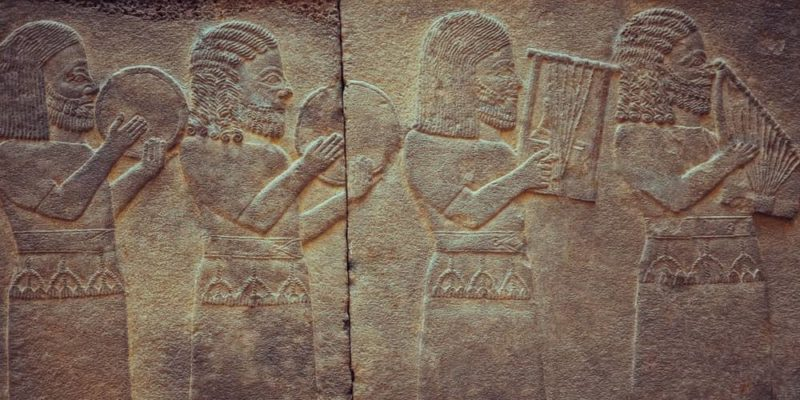
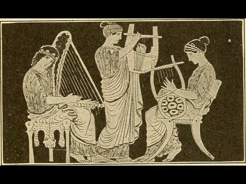
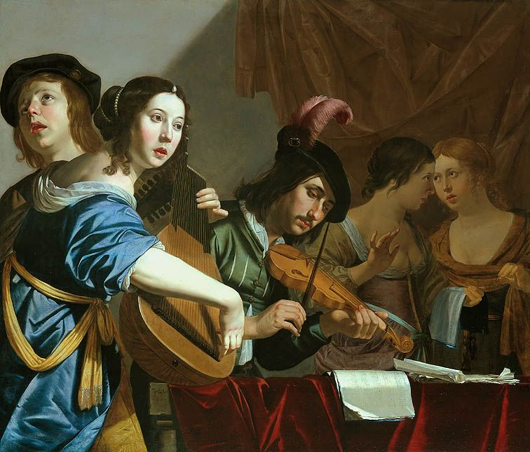
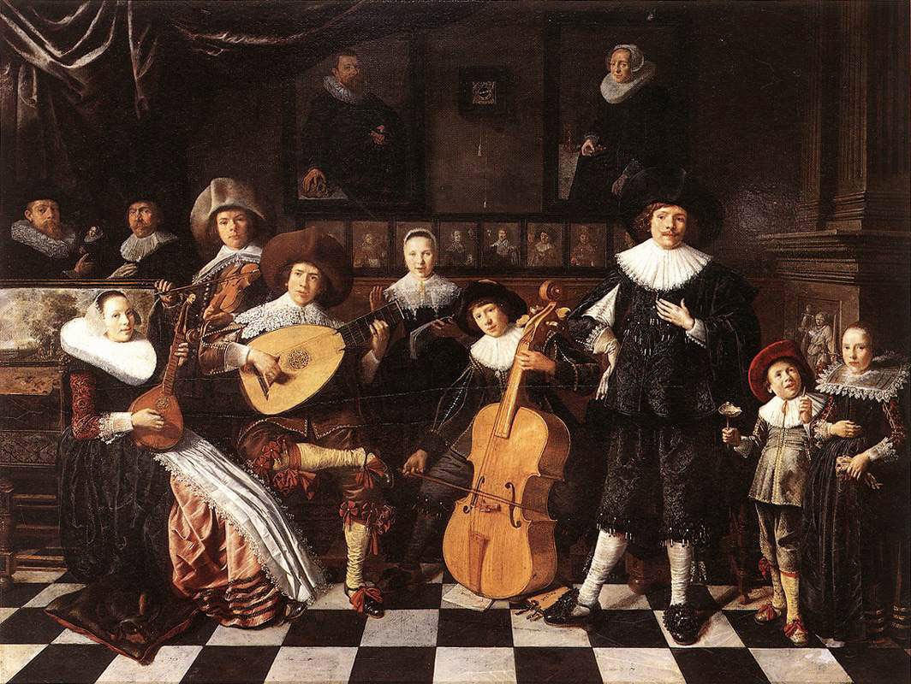
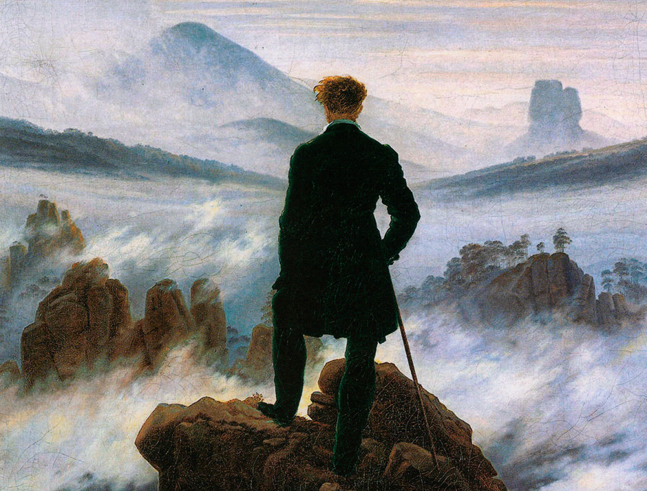

| Prehistoria | Edad antigua | Edad media | Renacimiento | Barroco | Clasicismo | Romanticismo | Siglo XX |
|---|---|---|---|---|---|---|---|
|
La música prehistórica es aquella que se creaba y se tocaba en la prehistoria, es decir en culturas anteriores a la invención de la escritura. Es en este periodo que nace la musica, con la intencion de imitar los sonidos de la naturaleza. |
Es en la época griega es donde se comienza a tener una información de la música más relevante. Para los griegos la música era muy especial y por ello la tendrán muy presente en sus vidas: cantaban en bodas, funerales, nacimientos y demás ceremonias religiosas. La encontraremos siempre ligada a la poesía y a la danza. Lo que nos queda de la música en la antigüedad son sus representaciones, tanto en pintura o escultura, nos queda la música escrita, es decir, la transcripción de las notas que los músicos reproducían y que hubo que descifrar y nos quedan también los instrumentos, reliquias de una música que sonó en los inicios de las civilizaciones. |
Durante la Edad Media, la música estuvo influenciada por los conceptos musicales de Pitágoras siendo, además, parte del quadrivium. Además, se sentaron las bases para las prácticas de notación musical y teoría musical.
|
La música del Renacimiento o música renacentista es la música antigua escrita durante el Renacimiento, entre los años 1400 y 1600, . Las características estilísticas de la música renacentista son su textura polifónica, que sigue las leyes del contrapunto, y está regida por el sistema modal heredado del canto gregoriano. En esta época las formas musicales más difundidas fueron el motete, la misa, la canción polifónica y el villancico (como aportación española). Durante estos dos siglos, el auge alcanzado por la música profana fue otra de las innovaciones de la época. La música paso a ser un arte no solo cultivado por clérigos, como en la Edad Media, y las canciones de corte popular y sobre todo el madrigal (poema cantado de tema lírico-galante) fueron piezas por las que se sintieron atraídos casi todos los compositores. |
Al barroco muchas personas lo definen como “pesado” y “retorcido”. Dejando a un lado lo subjetivo, para la música este tiempo en la historia es crucial, ya que fue un momento de reformas en donde la música se vuelve un elemento poderoso como espectáculo público y se utilizó como un medio de influencia. Para el músico resultó ventajoso porque muchas veces pasó a ser un sirviente de la nobleza y asegurar así su subsistencia (en algunos casos durante toda la vida) gracias a sus encargos. Algunos compositores importantes del Barroco fueron Georg Fredrich Händel, Georg Phillip Telemann, Antonio Vivaldi, Jean-Baptiste Lully, Henry Purcell, Domenico Scarlatti, Claudio Moteverdi y quizás uno de los músicos más influyentes de la historia: Johann Sebastian Bach. |
Es el estilo de la música culta europea desarrollado aproximadamente entre 1750 y 1820 por compositores como Joseph Haydn, Wolfgang Amadeus Mozart y Ludwig van Beethoven. Coincide con la época cultural y artística hoy denominada Neoclasicismo.
|
El Romanticismo musical está relacionado, por supuesto, con el Romanticismo en otras disciplinas: la corriente de cambios en Literatura, Bellas Artes y Filosofía,
aunque suele haber ligeras diferencias temporales dado que, el Romanticismo en aquellas Artes y en la Filosofía, se suele reconocer entre los años 1780 y 1840.
La música del Romanticismo intentaba expresar estas emociones hacia una persona u objeto al cual quiere o aprecia.
|
Por contemporánea entendemos que vivimos en dicha época, así que la música contemporánea es toda aquella música reciente que se ha producido en los últimos años y que se sigue produciendo hasta la fecha. Puesto que seguimos en esta etapa en curso, no se ha definido claramente si el término de “música contemporánea” debe aplicarse a la música actual de cualquier estilo, o si exclusivamente debe ser utilizado para la música de los compositores vanguardistas (que realizan música experimental). |
|  |  |

|
 |  |
|  |

|